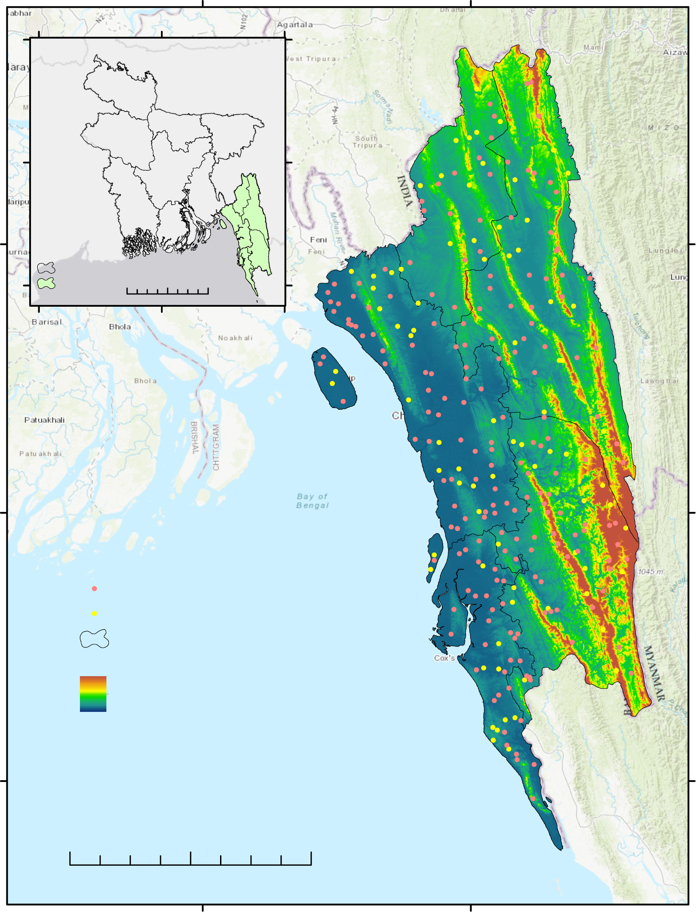

Assessing the performance of machine learning and analytical hierarchy process (AHP) models for rainwater harvesting potential zone identification in hilly region, Bangladesh.
Explore the StudyA multi-stage workflow integrating machine learning and AHP to classify rainwater harvesting potential zones.
11 influencing factors compiled: aspect, distance from road, drainage density, elevation, hill shade, lineament density, LULC, slope, TWI, rainfall, and geology. Inventory dataset of 135 suitable and 135 non-suitable points identified across the study area.
VIF (Variance Inflation Factor) and tolerance values computed for all predictors. All 11 factors passed with no significant multicollinearity. Drainage density and elevation showed highest VIF values, both within acceptable limits.
Four algorithms trained: Random Forest, Boosted Regression Trees, K-Nearest Neighbors, and Naive Bayes. Data split into 70% training and 30% validation sets. Natural breaks (Jenks) classification applied for zone mapping.
Analytical Hierarchy Process applied as a geospatial baseline method. Pairwise comparison matrix constructed for all 11 influencing factors. Consistency ratio validated to ensure reliable factor weighting.
RWH potential classified into five zones: Very Low, Low, Moderate, High, and Very High. Five models compared across Chattogram hilly districts to produce spatial suitability maps for rainwater harvesting infrastructure.
ROC-AUC evaluation performed for all models. BRT and RF achieved highest AUC of 0.93. KNN scored 0.88, NB 0.87, and AHP 0.82. Southern regions consistently identified as highly suitable across all models.
The southeastern hilly region of Bangladesh encompassing five districts with elevation ranging from -44m to 1,031m.

Comparative assessment of five models using ROC-AUC validation and spatial suitability mapping.
ROC-AUC scores for all five models. BRT and RF both achieved the highest accuracy at 0.93, significantly outperforming the traditional AHP method.
Percentage of study area classified as "Very High" suitability by each model. BRT predicted the largest very-high zone at 25.62%.
Relative importance of the 11 influencing factors as determined by the BRT model.
Drainage density and elevation together account for nearly 45% of the model's predictive power.
Critical insights from comparing five modeling approaches for RWH zone identification in southeastern Bangladesh.
Both Boosted Regression Trees and Random Forest achieved AUC of 0.93, significantly outperforming AHP (0.82). Machine learning approaches proved superior to traditional geospatial methods for RWH zone mapping.
All models consistently identified southern Chattogram as having the highest RWH potential. Lower elevation combined with higher rainfall creates ideal harvesting conditions in these areas.
The BRT model showed drainage density (22.81%) and elevation (22.04%) as the two most influential factors. The RF model showed more distributed importance across all 11 factors.
Northern hilly areas were classified as "very low" suitability across most models. Steep terrain and comparatively lower rainfall significantly reduce rainwater harvesting potential in these zones.
AHP predominantly predicted "moderate" suitability (61.99%) with poor discrimination between zones. Machine learning algorithms provided much finer spatial differentiation and more actionable classifications.
Findings provide actionable guidance for policymakers to implement RWH infrastructure in optimal zones, addressing freshwater scarcity challenges faced by hill tract communities in southeastern Bangladesh.
Journal of Asian Earth Sciences: X 13 (2025) 100189
This study evaluated the performance of four machine learning algorithms -- Random Forest (RF), Boosted Regression Trees (BRT), K-Nearest Neighbors (KNN), and Naive Bayes (NB) -- alongside the Analytical Hierarchy Process (AHP) for identifying rainwater harvesting (RWH) potential zones in the Chattogram hilly districts of Bangladesh.
A total of 11 influencing factors were analyzed using 270 inventory points (135 suitable and 135 non-suitable) with a 70/30 train-test split. The BRT and RF models achieved the highest predictive accuracy with AUC values of 0.93, followed by KNN (0.88), NB (0.87), and AHP (0.82). Southern regions of the study area were consistently identified as having the highest potential for rainwater harvesting.
The findings demonstrate that machine learning models significantly outperform traditional AHP-based approaches for RWH potential zone mapping, offering valuable insights for sustainable water resource management in hilly terrain regions facing freshwater scarcity.
Read the full paper →